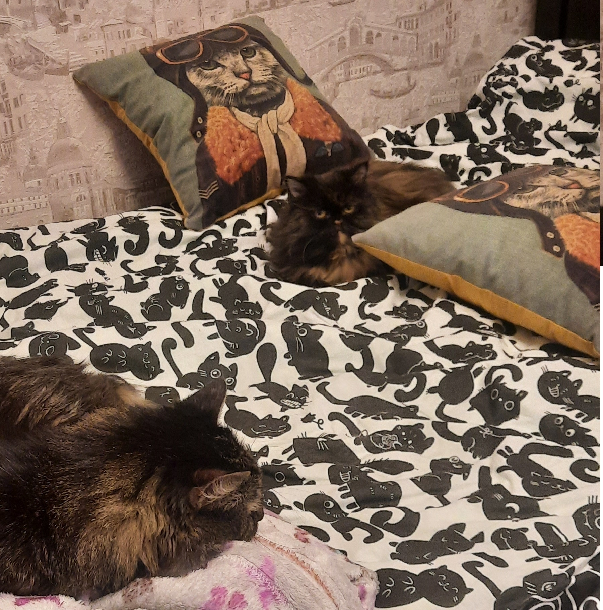

В этих глазах вся боль
Персидская кошка – исключительно домашнее животное в буквальном понимании этого определения. Представители этой породы утратили способность к охоте, они не могут быстро бегать и совершать высокие прыжки. Прогулки на улице вашему любимцу не понадобятся.
Благодаря своей густой длинной шерсти персидская кошка неплохо переносит холод, но некоторые профилактические меры во избежание простудных заболеваний предпринять все же стоит. Не размещайте кошачий домик или лежанку возле входных дверей, окон и в других местах, где возможны сквозняки. А если ваш питомец предпочитает проводить время, лежа на подоконнике, – подстелите ему мягкую теплую ткань.
Подробнее о породе
Няше почти 11 лет. Она любит лежать на пакетах и лезть в разные дырки. Боится высоты, на балконе не подходит к краю. Иногда она похожа на сову, а иногда на мудрого сенсея. Если ты займешь ее место, она придет и будет тебя толкать.
В повседневной жизни, животное не мяукает (только при мытье). Обожает расчесывать свою шерсть и имеет немного подлый характер. В играх с другими котами она любит бить их лапой по "хвосту" и убегать.При этом она всегда уходит от миски, когда приходит другой.
Можно много про нее написать, но как вводная часть для встречи с ней сойдет.
Плюсы Няши:
Недостатки Няши